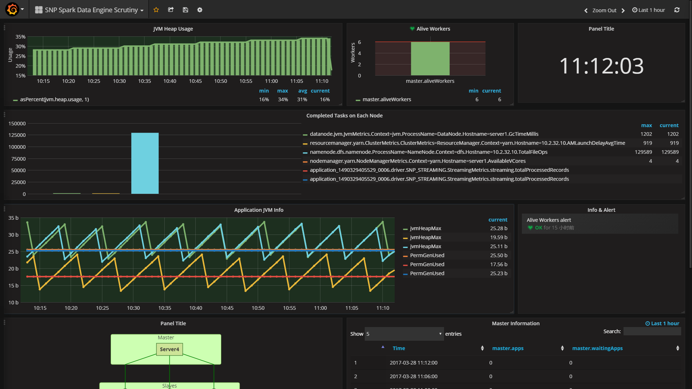
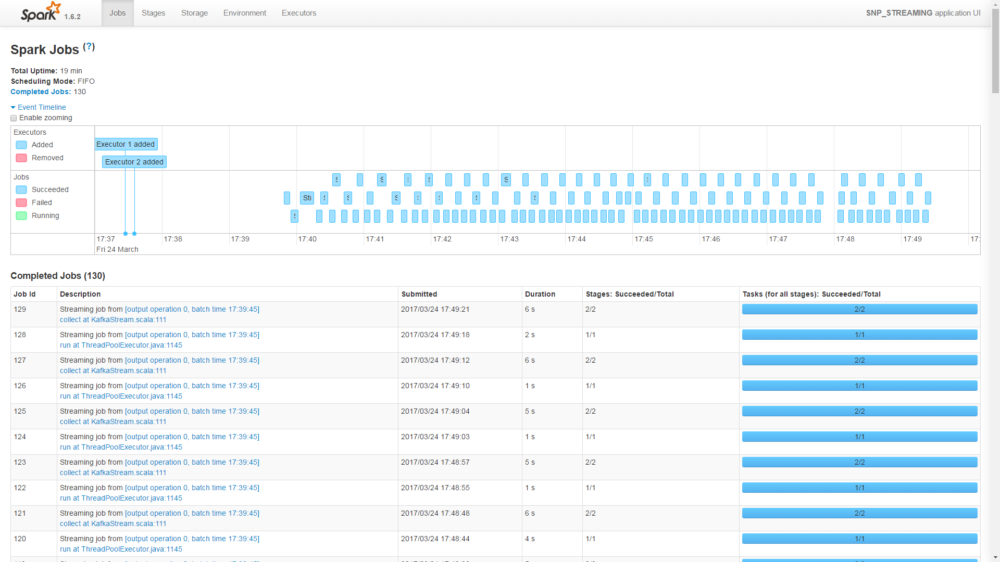
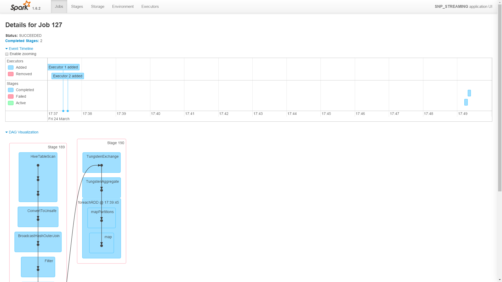
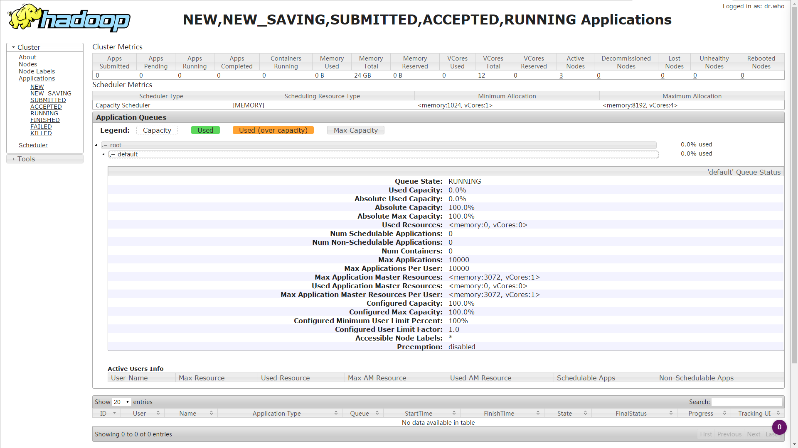
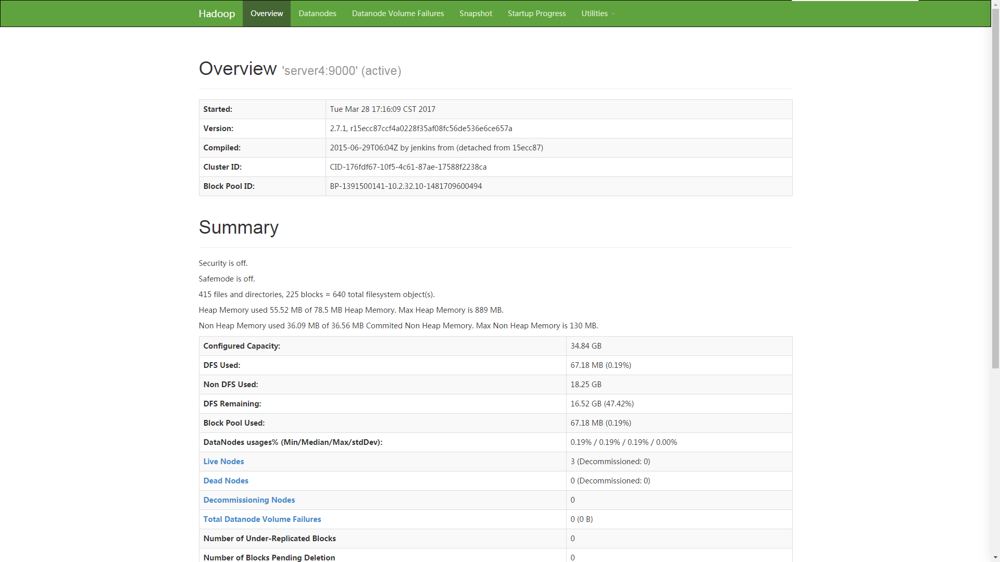

Toggle navigation
insert_chart
三农普ETL平台
toc
zhkmxx930
arrow_drop_down
用户信息
设置
注销
数据源配置
任务设置
进度管理
监控平台
测试
SPARK数据引擎监控平台
ETL系统
监控平台

Grafana集群监控平台
more_vert
点此进入Grafana集群监控平台
Grafana集群监控平台
close
1. Spark集群Metrics信息监控
2. yarn集群Metrics信息监控
3. HDFS节点Metrics信息监控
4. Spark任务调度监控
5. 集群资源信息监控

Spark历史数据监控服务
more_vert
点此进入Spark历史数据监控服务
Spark历史数据监控服务
close
1. Spark集群任务调度DAG
2. 历史任务调度时间
3. 历史任务调度时间图
4. 历史任务列表
5. 集群资源信息监控

Spark Streaming监控服务
more_vert
点此进入Spark Streaming监控服务
Spark Streaming监控服务
close
1. Spark Streaming任务调度DAG
2. Spark Streaming任务调度时间
3. Spark Streaming任务调度时间图
4. Spark Streaming批处理时间图
5. 集群资源信息监控

Yarn平台监控服务
more_vert
点此进入Yarn平台监控服务
Yarn平台监控服务
close
1. Yarn集群节点健康度
2. Yarn资源分配情况
3. Yarn调度日志系统
4. 集群资源信息监控

HDFS平台监控服务
more_vert
点此进入HDFS平台监控服务
HDFS平台监控服务
close
1. HDFS集群节点健康度
2. HDFS配置情况
3. HDFS调度日志系统
4. HDFS存储空间管理